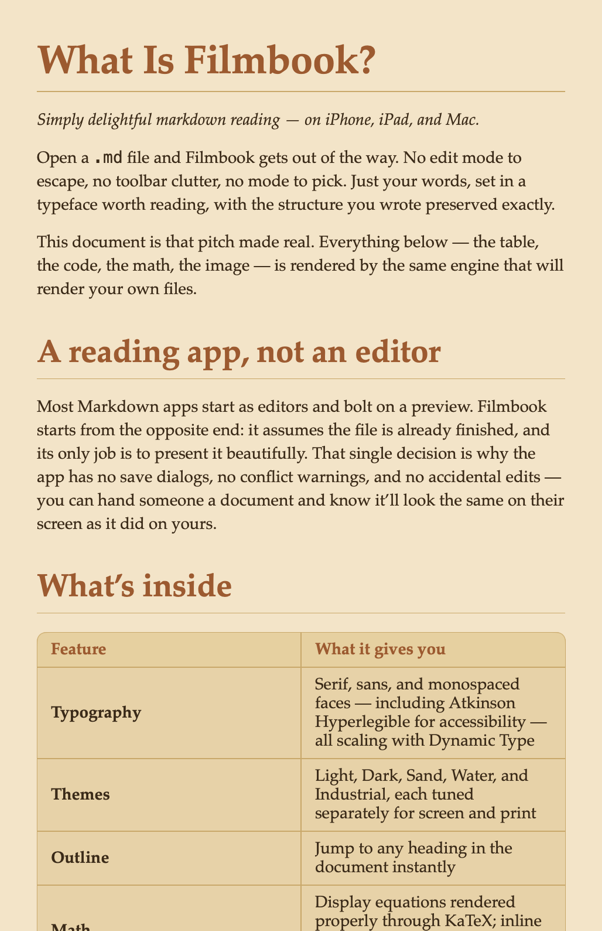
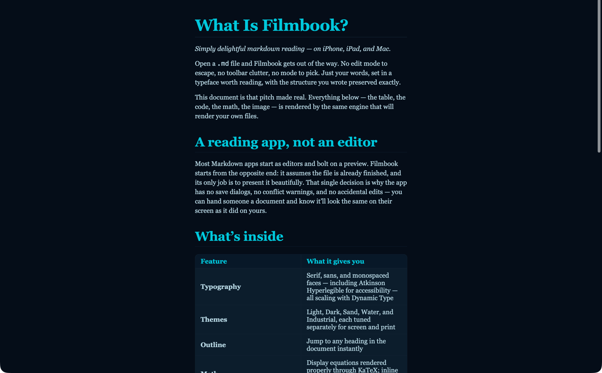
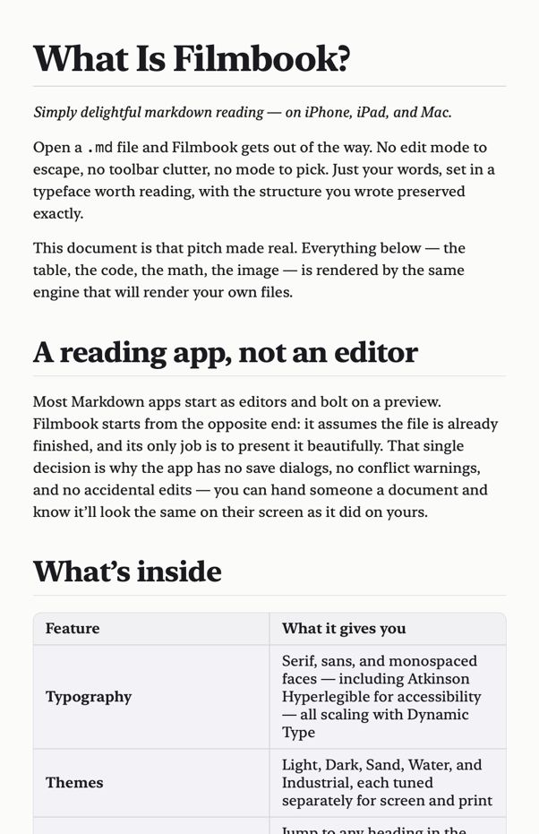
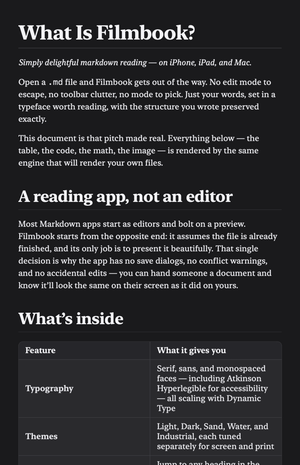
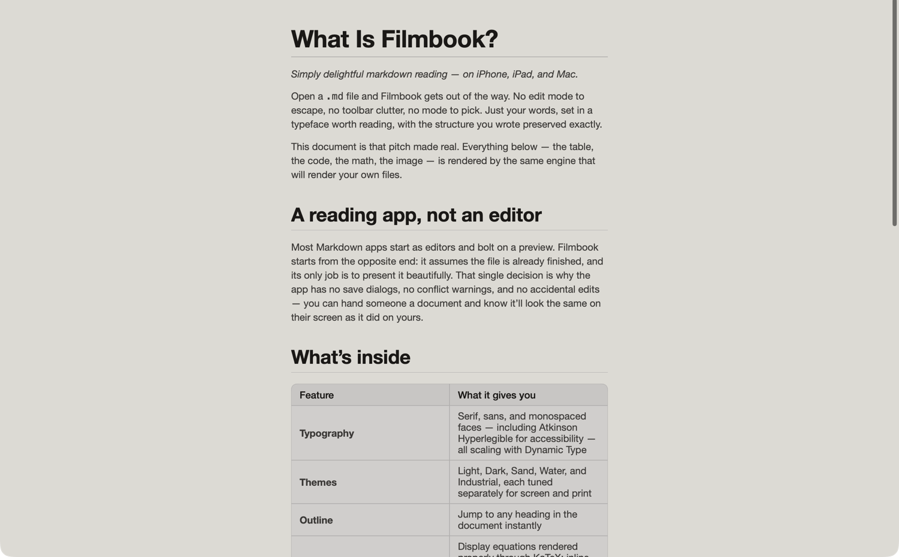
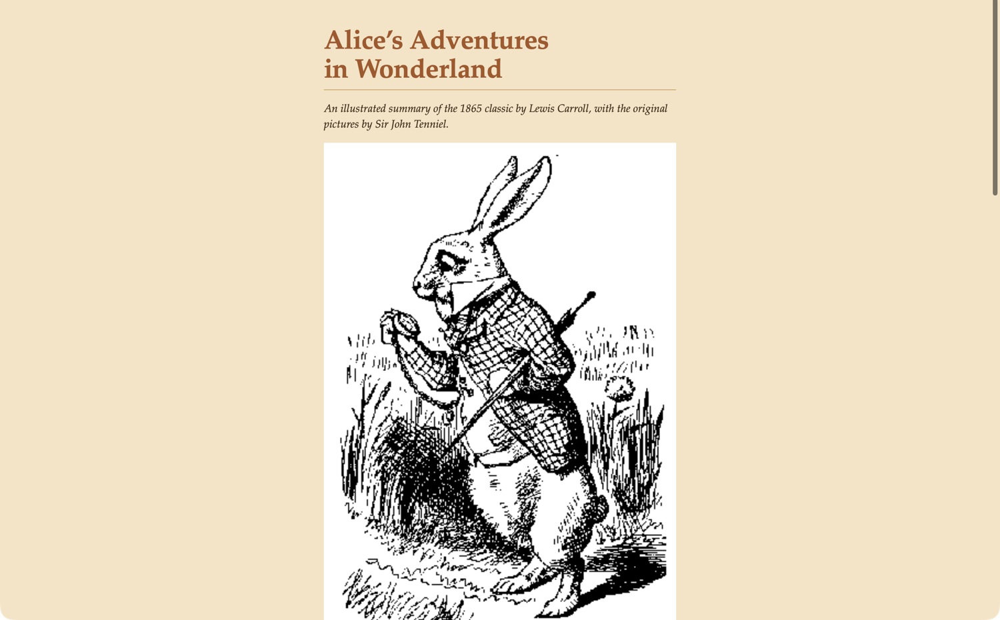
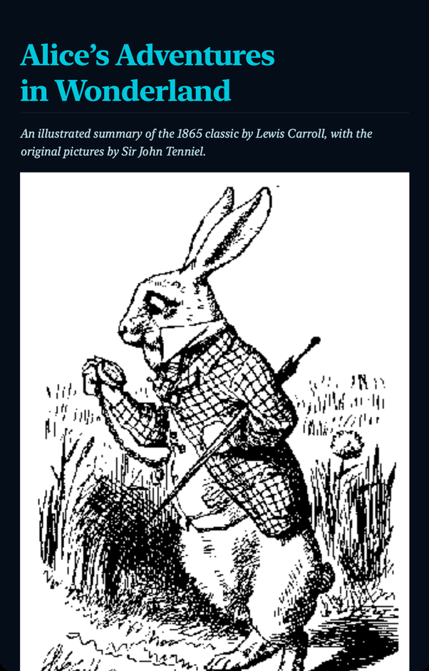
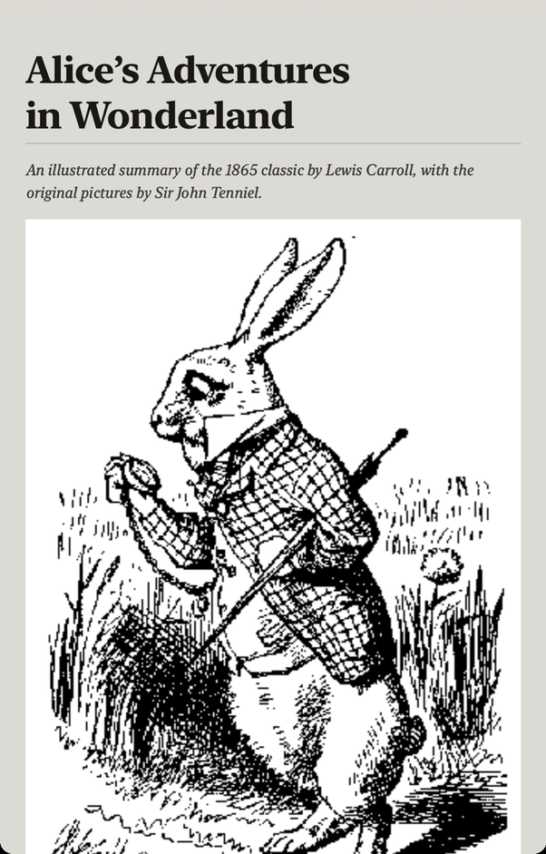

Simply delightful Markdown reading.
Open a .md file and Filmbook gets out of the way. No edit mode to escape, no toolbar clutter — just your words, set in a typeface worth reading.



A reading app, not an editor
Most Markdown apps start as editors and bolt on a preview. Filmbook starts from the opposite end: it assumes the file is already finished, and its only job is to present it beautifully.
"Good typography is what makes a page disappear, so the reader is left alone with the words."
What's inside
Everything Filmbook does, it does for the reader.
Typography
Serif, sans, and monospaced faces — including Atkinson Hyperlegible for accessibility — all scaling with Dynamic Type.
Themes
Light, Dark, Sand, Water, and Industrial, each tuned separately for screen and print.
Outline
Jump to any heading in the document instantly.
Math
Display equations rendered properly through KaTeX; inline math approximated with Unicode symbols.
Code
Syntax-aware highlighting that adapts to every theme.
Export
Print or save a paginated PDF of the rendered document.
Five themes, tuned by hand
The same guide, rendered in every theme Filmbook ships with.


See it rendered: Alice in Wonderland
A public-domain illustrated summary of the 1865 classic, with Sir John Tenniel's original artwork — rendered by the same engine that reads your own files.



Story: Alice's Adventures in Wonderland by Lewis Carroll, 1865 — public domain. Illustrations by Sir John Tenniel — public domain. Source: Project Gutenberg.